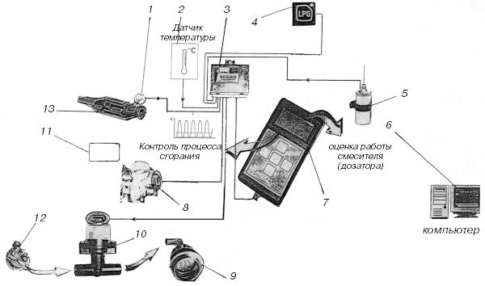
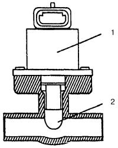

Система «Nicolaus» (Италия).
Московская фирма «Эльпигаз» предлагает систему управления подачей газа «Nicolaus» итальянского производства, которую устанавливают в основном на недорогих подержанных иномарках или на отечественных автомобилях. Стоимость газовой системы, включая ее установку, не превышает 5 % от реальной стоимости автомобиля.
Первоначально эта система предназначалась для автомобилей с впрысковыми двигателями, оснащенными простыми системами управления впрыском. Использование системы «Nicolaus» на современных двигателях с распределенным впрыском вызывает некоторые трудности, связанные с возникновением обратных хлопков при работе на газе. Однако противохлопковый клапан, совмещенный со смесителем, который расположен перед дроссельной заслонкой, вполне справляется с этой задачей.
В состав системы входят также традиционные элементы, используемые в механических устройствах с электронным управлением: редуктор-испаритель с электромагнитным клапаном и смеситель газа, совмещенный с противохлопковым клапаном.
Газовоздушную смесь заданного состава формирует электрический дозатор с шаговым электродвигателем. В состав системы входят эмуляторы, подающие в базовый бензиновый электронный блок управления (ЭБУ) сигналы, имитирующие работу бензиновых форсунок, лямбда-зонда и других элементов.
Большинство функций системы управления «Nicolaus» сведено в один блок (рис. 35), что позволяет эффективнее, автоматически контролировать состав газовоздушной смеси во время работы двигателя на газе сжиженном нефтяном.

Рис. 35. Схема подключения системы «Nicolaus»: 1 – лямбда-зонд; 2 – датчик температуры охлаждающей жидкости; 3 – блок системы управления БСУ «Nicolaus»; 4 – интегрированный переключатель; 5 – бабина; 6 – персональный компьютер; 7 – тестер программатор АУ215; 8 – датчик положения дроссельной заслонки; 9 – смеситель с противохлопковым клапаном; 10 – дозатор (аттуатор); 11 – штатный электронный блок управления; 12 – редуктор-испаритель; 13 – каталитический нейтрализатор.
При работе на этом топливе в управлении двигателем одновременно участвуют базовый бензиновый ЭБУ (11) и блок системы управления БСУ (3), который представляет собой самостоятельный многофункциональный микропроцессор. Он обрабатывает сигналы, поступающие от датчика кислорода (лямбда-зонда) (1), датчика числа оборотов двигателя RPM5 с катушкой зажигания или с тахометром, датчика положения дроссельной заслонки TRS8 и датчика температуры на редукторе (12).
БСУ – универсален и может устанавливаться практически на любую модель автомобиля при наличии программного обеспечения.
Программное обеспечение этого блока корректируется в зависимости от модели двигателя, дозатора газа, типа смесителя и выполняется непосредственно установщиком газового оборудования с помощью тестера-программатора «Эльпигаз» АЕ215, который может поставляться отдельно. Возможно также подключение блока системы управления через интерфейс (код АЕ 171) к переносному компьютеру 6 с соответствующим программным обеспечением.
При подключении этого прибора к блоку системы управления можно предварительно произвести тестирование основных элементов бензиновой системы и получить визуальное отображение цифровой и графической информации о работе системы управления двигателем на дисплее (7). Все это дает возможность существенно упростить, сделать доступной настройку газовой системы питания и обеспечить надежность ее последующей эксплуатации.
Система управления, на основании анализа полученных сигналов и сравнения их в блоке микропроцессора с заданными значениями подает главный проставляющий сигнал на дозатор с шаговым электродвигателем (аттуатор) (10).

Рис. 36. Дозатор (аттуатор): 1 – шаговый двигатель; 2 – шток.
Аттуатор (рис. 36) – это регулятор, устанавливаемый между редуктором-испарителем (12) и смесителем (9). Аттуатор изменяет поток газа во время работы двигателя по сигналам БСУ, которое использует сигнал от лямбда-зонда таким образом, чтобы газовоздушная смесь, поступающая в двигатель, имела состав, близкий к стехиометрическому (коэффициент избытка воздуха около 1). Это обеспечивает оптимальную и долговременную работу каталитического нейтрализатора (13) и гарантирует выполнение требований к выбросу отработавших газов на уровне, более низком, чем при работе данного двигателя на бензине.
Система позволяет предварительно выбрать смеситель для оптимальной работы с аттуатором.
Опыт эксплуатации систем, оснащенных управляемыми аттуаторами, показывает, что при работе в режиме холостого хода может возникнуть нестабильность. Система «Nicolaus», благодаря возможности точно устанавливать оптимальное начальное проходное сечение аттуатора и проверять этот показатель по отображению на дисплее программатора АЕ215, позволяет практически исключить этот недостаток.
Система «Nicolaus» посредством БСУ генератора сигналов может стимулировать действие лямбда-зонда во время работы двигателя на газе без использования дополнительных адаптеров и эмуляторов. Сигнал лямбда-зонда поступает в БСУ для формирования сигнала управления аттуатором (10) и затем поступает в ЭБУ, моделируя работу на бензине. Исключение составляют системы питания, оснащенные системами бортовой диагностики ЕОВД (European On Board Diagnostic). Отечественные бензиновые впрысковые двигатели пока не оснащаются ЕОВД, хотя их внедрение в автомобильную практику было бы очень полезно. В Европе эти системы устанавливаются с 2001 г.
В БСУ встроены реле для управления электромагнитами, которые используются для отключения цепи бензиновых форсунок (если двигатель не требует эмуляции форсунок) и стирания содержимого памяти ЭБУ в случае, если в процессе работы двигателя на газе блок управления бензиновым впрыском запоминает правильные показания датчиков.
БСУ также соединен с датчиком температуры (2), установленным на редукторе-испарителе (рис. 35). Благодаря этому обеспечивается автоматическое переключение двигателя с бензина на газ – по достижении редуктором-испарителем заданной температуры. Таким образом, газ поступает в двигатель в газообразном состоянии с минимальной задержкой. Водитель может не контролировать степень нагрева двигателя перед подключением на газ. При этом исключается подача в двигатель газа в жидком состоянии.
Интегрированный переключатель (4), входящий в систему, сигнализирует, каков резервный уровень газа в баллоне, переключает работу двигателя с бензина на газ и контролирует заданный режим питания (рис. 35).
Если запуск двигателя на бензине невозможен, можно запустить двигатель в аварийном режиме непосредственно на газе.
Предусмотрена цепь для автоматического управления электромагнитными клапанами для подачи газа на редуктор-испаритель и газовый фильтр.
Система подключена к датчику количества газа в баллоне, которое отображается индикаторами, расположенными на блоке переключателя «бензин – газ».
Таким образом, представленная система «Nicolaus» имеет широкий диапазон функциональных возможностей, обеспечивающих взаимодействие с любыми датчиками, установленными на автомобиле (лямбда-зонд, TRS, RPS), и возможности выбора оптимального режима работы дозатора для получения высоких показателей динамики движения и экономичности автомобиля.